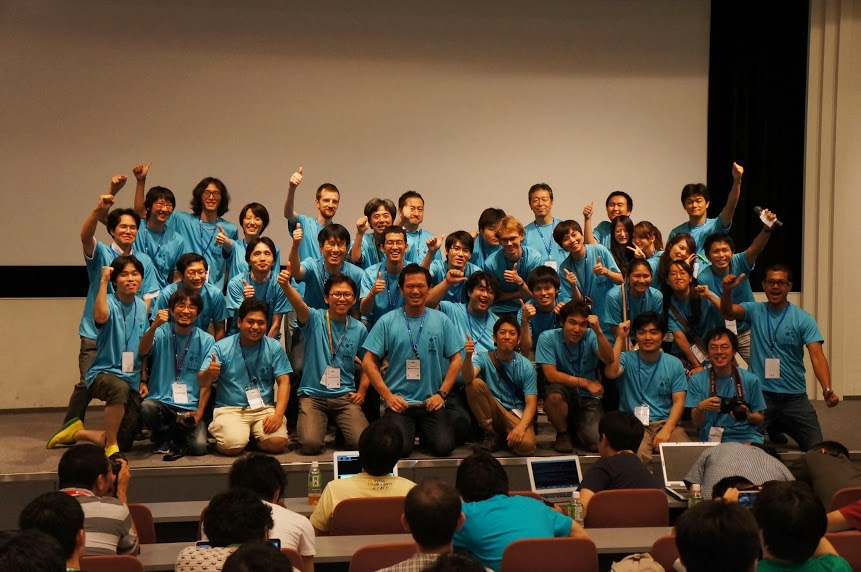
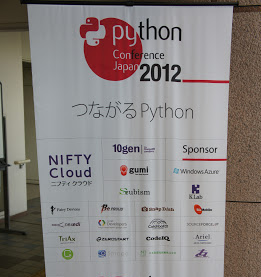

PyCon JPとは？
PyCon は、Pythonユーザが集まり、PythonやPythonを使ったソフトウェアについて情報交換し、交流するためのカンファレンスです。 PyCon JP開催を通してPythonの使い手が一同に集まり、他の分野などの情報や知識や知人を増やす場所とすることが目標です。


スタッフ募集中！
一緒に素晴らしいイベントを作りましょう！
あなたも「今までで最高のPyCon JP」を作りませんか？ ご興味のある方は、是非メーリングリストに参加してください！
スポンサーしてください。
活発な開発者コミュニティに参加してください。
PyCon JP 2014 のスポンサーシップは現在検討中です。
